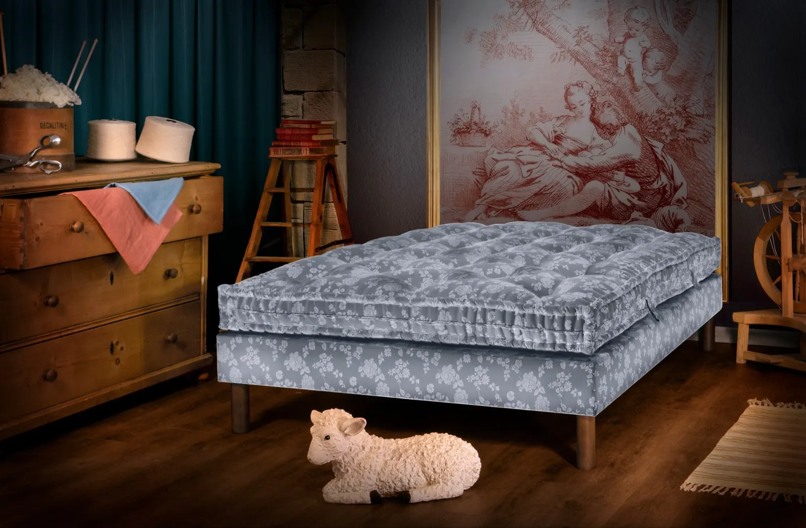
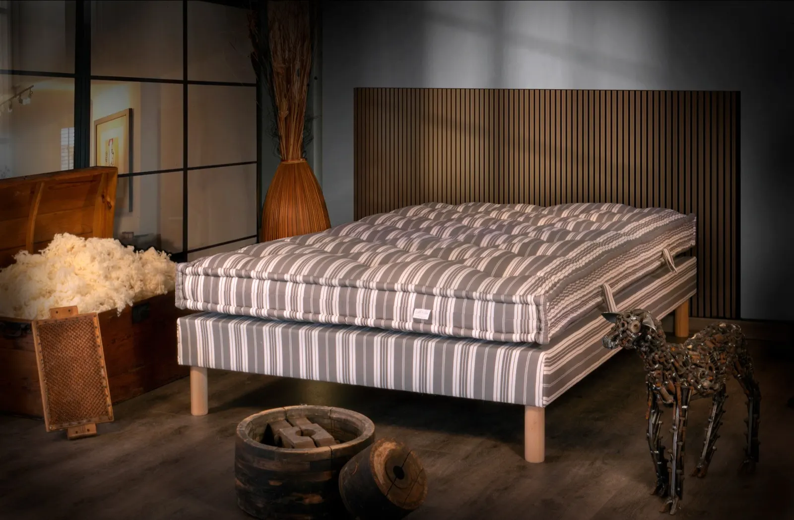
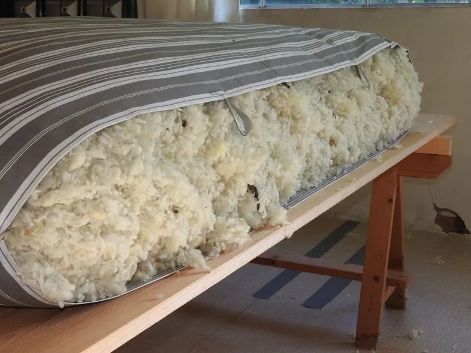
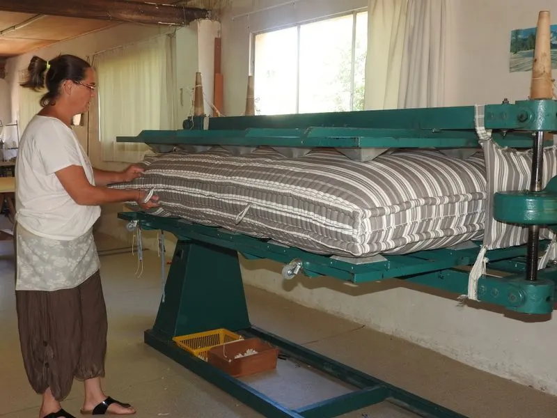
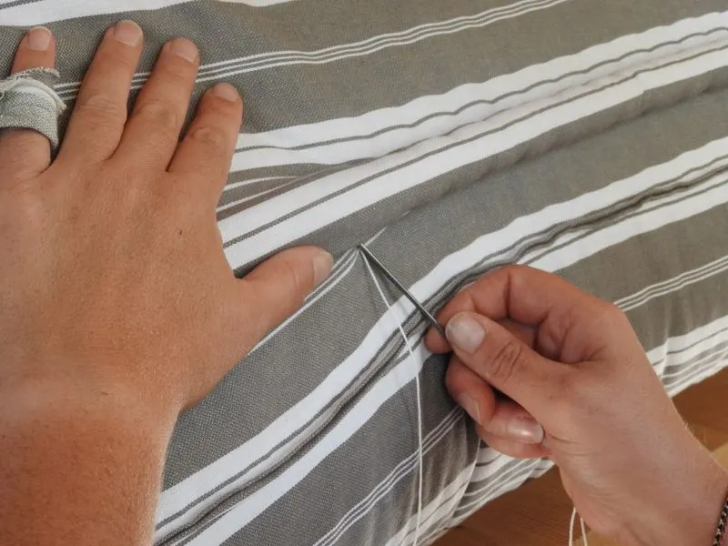
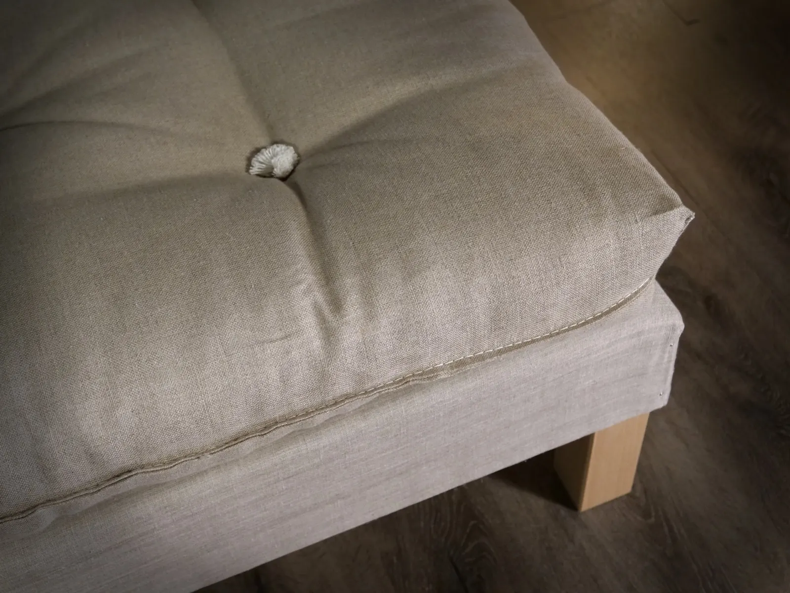
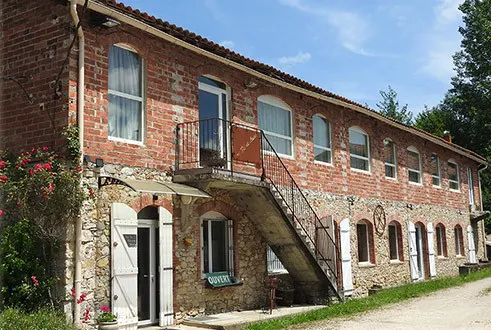
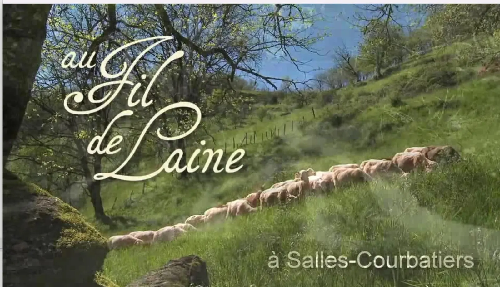

Fabrique artisanale de literie à Salles-Courbatiès, en Aveyron
Des matelas en laine, confectionnés à la main depuis 1896.
Matelas, futons, couettes, oreillers, traversins, surmatelas et sommiers : tout est fabriqué dans notre atelier aveyronnais, avec la laine d'éleveurs de la région et des machines de 1945 toujours en activité.

- Depuis 1896un savoir-faire de plus d'un siècle
- Machines de 1945toujours en activité
- Laine de la régionprincipalement d'éleveurs de notre région
- Eau de sourcela laine est lavée sans savon, au moulin
- Sur mesuretoutes dimensions et réfection de matelas

Coutil rayé et coffre de laine bruteToute la literie, de la laine au sommier.
Chaque pièce est réalisée avec soin, grâce à un savoir-faire transmis au fil des générations, où l'expérience humaine reste au cœur de chaque étape.
Matelas
4 choixTout laine confectionné à la main, 1 côté laine et 1 côté coton, ou laine sur un cœur en mousse haute résilience, en 2 faces laine ou 1 face laine et 1 face coton.
Voir les matelasFutons
3 gammesTout laine, tout coton pour un confort ferme, ou 1 côté laine et 1 côté coton, en confection traditionnelle.
Voir les futonsCouettes
laine ou duvetCouettes laine simple, 4 saisons ou duo, pour un confort naturel toute l'année, et couettes duvet, légères et chaudes.
Voir les couettesOreillers et traversins
en laineOreillers et traversins en laine, pour des nuits douces.
Voir les oreillersSommiers et pieds
lattes ou ressortsSolides et durables.
Voir les sommiers
De la toison au matelas, tout se passe à l'atelier.
La laine est lavée dans notre moulin avec une eau de source, sans savon, puis préparée grâce à nos machines et aux gestes précis de nos artisans. Elle garde ainsi ses qualités : absorber l'humidité, réguler la température, offrir un confort sain et durable.
- Le lavoir
- L'essoreuse
- Le battoir
- La loup-carde
- La carde
- La capitonneuse



Certaines machines datent de plusieurs générations. Entretenues et adaptées au fil du temps, elles participent encore à chaque fabrication. Voir les machines
« Tout le monde aime la laine. Le but n'est pas de vous la faire aimer, mais de vous prouver que vous avez raison de l'aimer… objectivement. »
Chaude, résistante, isolante : notre plaquette réunit ce qui fait de la laine une matière de qualité pour dormir.

Bouton de capiton en laineDu « Fil de l'Âne » au Fil de Laine.
Au début du XXe siècle, le moulin de Granayrac était un moulin à froment et à huile. Les bâtiments construits autour dans les années 1940-1950 et les machines de cette époque sont encore aujourd'hui au cœur de notre activité.

- 1896Le savoir-faire remonte à la fin du XIXe siècle, quand la filature Blanc débute à Cajarc.
- 1918Paul Blanc, mécanicien formé à Saint-Étienne, installe ses machines au Moulin Neuf, près de Naussac.
- 1938Il acquiert le moulin de Granayrac et l'adapte en filature : le « Fil de l'Âne » devient le « Fil de Laine ».
- 1972Pierre et Léa Blanc poursuivent l'activité, puis Gérard Blanc la dirige de 1984 à 2003.
- 2003Chantal et Jean-Michel Mallent reprennent la filature et la développent pendant plus de vingt ans.
- 2024Leur fille Coralie et son mari Jean-Philippe Calvié reprennent l'entreprise, pour transmettre à leur tour ce savoir-faire.
La fabrique, vue à la télévision.
Trois reportages et une publicité, à revoir en vidéo.

- France 3, Météo à la carte
Artisanat : le dernier fabricant de matelas en laine d'Aveyron
- Arte, Détour(s) de mob
Le reportage sur Au Fil de Laine
- France 3 Occitanie, Vous êtes formidables
Reportage sur le Fil de Laine
Venir à la fabrique, ou se faire livrer.
Notre service client répond à vos questions et vous conseille, par téléphone ou par e-mail.
- Retrait gratuit de votre commande dans notre salle d'exposition, à l'atelier
- Livraison offerte en France métropolitaine dès 350 € d'achat
- Livraison à la date de votre choix, même des mois après la commande
- Rendez-vous possible le samedi et hors des horaires d'ouverture
- La fabrique
- 16 impasse du Fil de Laine
12260 Salles-Courbatiès - Téléphone
- 05 65 81 63 65
- contact@aufildelaine.com
- Horaires
- Du lundi au vendredi, 8h-12h et 13h-17h
Samedi sur rendez-vous